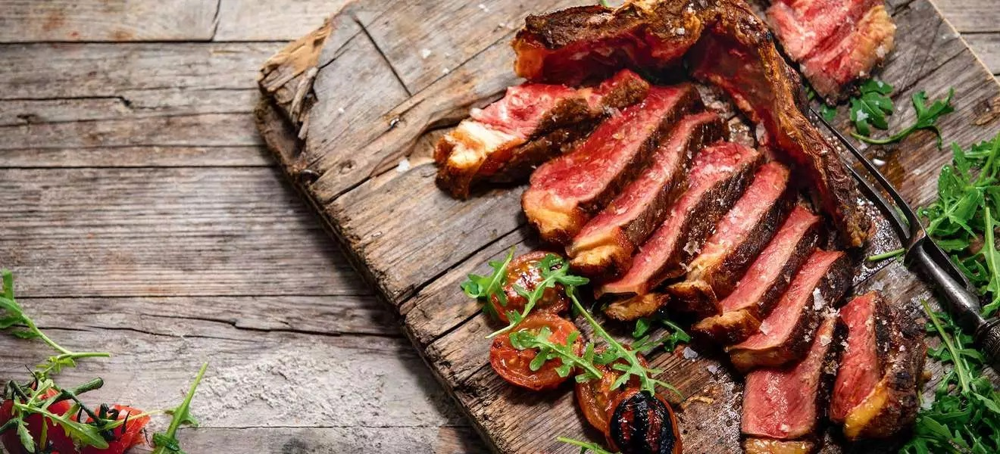

Bistecca alla Fiorentina

The king of all steaks, Bistecca Alla Fiorentina.
Ingredients
- 2 to 3 pound bone-in porterhouse steak
- Fresh rosemary, sage, thyme
- Salt & pepper, garlic & onion
- Olive oil and unsalted butter
Steps
- Make the baster by wrapping the fresh herbs up in butcher's twine.
- Next, brush both sides of the steak with olive oil.
- Season the steak on both sides with salt, pepper, onion, and garlic granules.
- Cook it for 4-6 minutes per side for a beautiful rare steak.
- Baste it with the butter and brush it with the fresh herbs
- Brushing it one last time with the butter and herbs and carving the cuts of steak away from the bone.
- Slice the strip steak and filet mignon away from the T-bone and then slice those cuts on a bias and serve it all next to the bone for a cool rustic look.